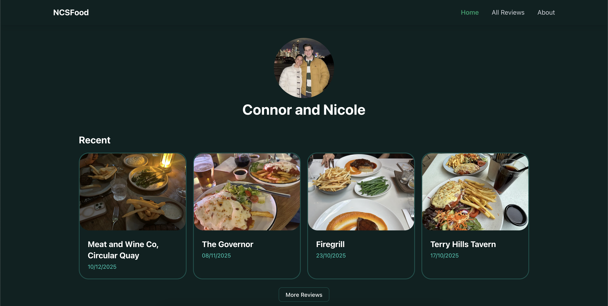

NCSFood #
My girlfriend and I review some food and restaurants that we experience on a social media account for our friends and family to see and interact with.
I modify and post these reviews to a website called NCSFood that I maintain.
The website in question is a simple static site developed with a HUGO theme that stores all of our reviews so that they become searchable and publicly accessible.

While this project is mainly a passion project where I get to share my love of certain foods and restaurants, it has also helped me further develop my skills. Specifically with Git, Github, and static site development/hosting.
Technology Utilised: Hugo, Markdown, Github